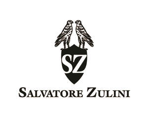

Trade Mark Journal No.2025/011 14 March 2025
UK00004168613 4 March 2025 (14,18,25)

- Class 14
- Jewellery; Necklaces [jewellery]; Brooches [jewellery]; Jewellery brooches; Jewellery, including imitation jewellery and plastic jewellery; Pendants [jewellery]; Bracelets [jewellery]; Brooches [jewellery, jewelry (Am.)]; Ornaments [jewellery]; Amulets being jewellery; Pearls [jewellery]; Trinkets [jewellery]; Necklaces [jewellery, jewelry (Am.)]; Jewelry; Fashion jewellery; Gold jewellery; Lockets [jewellery]; Brooches [jewelry]; Jewelry brooches; Brooches being jewelry; Jade [jewellery]; Clasps for jewellery; Charms [jewellery]; Charms for jewellery; Jewellery charms; Enamelled jewellery; Ornaments [jewellery, jewelry (Am.)]; Pearls [jewellery, jewelry (Am.)]; Items of jewellery; Jewellery items; Costume jewellery; Decorative brooches [jewellery]; Rings being jewellery; Bracelets [jewellery, jewelry (Am.)]; Rings [jewellery, jewelry (Am.)]; Shoe jewellery; Precious jewellery; Crucifixes as jewellery; Necklaces [jewelry]; Agate as jewellery; Pins [jewellery, jewelry (Am.)]; Jewellery chains; Chains [jewellery]; Jewellery chain; Jewellery in semi-precious metals; Medallions [jewellery, jewelry (Am.)]; Paste jewellery [costume jewelry [Am.]]; Gold plated brooches [jewellery]; Pins [jewellery]; Jewellery boxes; Amber pendants being jewellery; Imitation jewellery; Cabochons for making jewellery; Body jewellery; Gold thread [jewellery, jewelry (Am.)]; Beads for making jewellery; Silver thread [jewellery, jewelry (Am.)]; Fake jewellery; Plastic costume jewellery; Imitation jewellery ornaments; Sterling silver jewellery; Jewellery incorporating pearls; Bracelets [jewelry]; Diamond jewelry; Jewellery containing gold; Jewellery in precious metals; Artificial jewellery; Jewellery for personal wear; Jewellery cases; Charms [jewelry].
- Class 18
- Bags; Tote bags; Luggage bags; Duffle bags; Carry-on bags; Toiletry bags; Bags for clothes; Carry-all bags; Belt bags and hip bags; Carrying bags; Cross-body bags; Luggage, bags, wallets and other carriers; Crossbody bags; Bucket bags; Leather bags; Sling bags; Canvas bags; Shoe bags; Belt bags; Clutch bags; Bags for travel; Garment bags; Messenger bags; Leather bags and wallets; Shoulder bags; Make-up bags; Cosmetic bags; Bags for carrying pets; Hand bags; Gym bags; Knitted bags; Travelling bags; Attaché bags; Cabin bags; Flight bags; Traveling bags; Beach bags.
- Class 25
- Clothing; Knitwear [clothing]; Jackets [clothing]; Ready-to-wear clothing; Woolen clothing; Furs [clothing]; Linen clothing; Gloves [clothing]; Clothes; Shorts [clothing]; Denims [clothing]; Cashmere clothing; Leather clothing; Clothing of leather; Leather (Clothing of -); Silk clothing; Knitted clothing; Windproof clothing; Hoods [clothing]; Embroidered clothing; Belts for clothing; Casual clothing; Waterproof clothing; Jackets being sports clothing; Jackets (Stuff -) [clothing]; Stuff jackets [clothing]; Bottoms [clothing]; Clothing for leisure wear; Ready-made clothing; Trunks being clothing; Leisure clothing; Drawers [clothing]; Clothing for sports; Sports clothing; Men's clothing.
MAR SAWA LTD